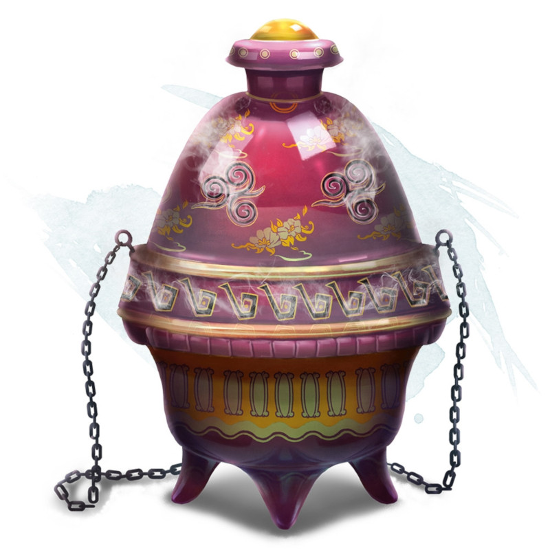

Encensoir de contrôle des élémentaires de l'air
Objet merveilleux, rare
Tant que de l'encens brûle dans cet encensoir, vous pouvez utiliser une action pour prononcer le mot de commande de l'encensoir et invoquer un élémentaire de l'air, comme si vous aviez lancé le sort invocation d'élémentaire. L'encensoir ne peut être réutilisé de la sorte avant le prochain lever de soleil.
Ce récipient de 30 centimètres de hauteur et de 15 centimètres de diamètre ressemble à un calice au couvercle ouvragé. Il pèse 500 grammes.
Ce récipient de 30 centimètres de hauteur et de 15 centimètres de diamètre ressemble à un calice au couvercle ouvragé. Il pèse 500 grammes.
Dungeon Master´s Guide (SRD)
